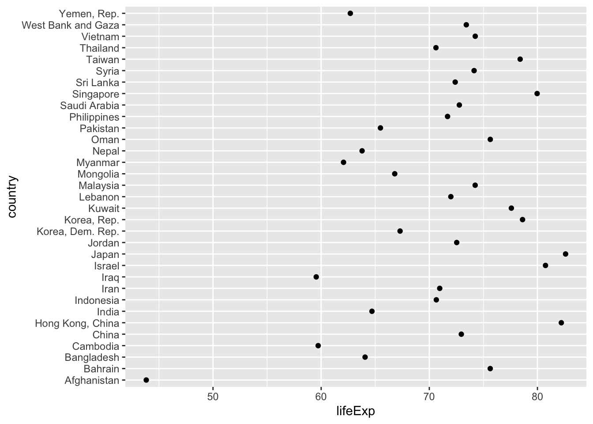
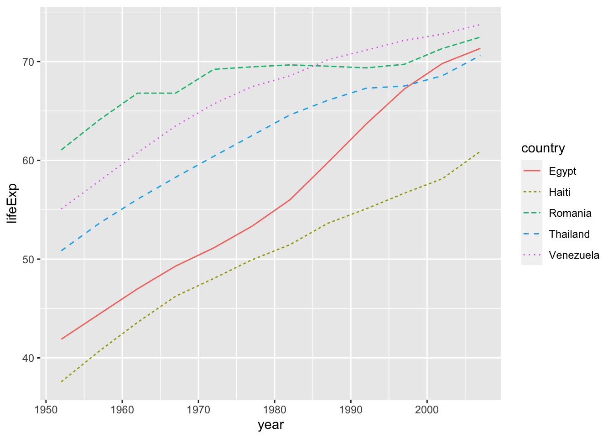

Chapter 5 Factor Practice
5.1 The basic structure
Let’s say that you have 100 cups of sizes small, medium, or large.
cups <- c("small", "medium", "large")
set.seed(2020)
manyCups <- sample(cups, size = 100, replace = TRUE)
table(manyCups)## manyCups
## large medium small
## 25 39 36str(manyCups)## chr [1:100] "large" "medium" "small" "small" "medium" "medium" "small" ...Note that table() renders these in alphabetical order. It’s usually more useful to render them in order of magnitude by setting levels.
sizesCups <- factor(manyCups, levels = c("small", "medium", "large"))
sizesCups## [1] large medium small small medium medium small small medium medium
## [11] medium small medium large medium small medium medium medium large
## [21] medium large medium small large medium medium medium large medium
## [31] large large small small small medium large small small medium
## [41] large small small small large small small large medium medium
## [51] medium small large medium small medium large small small medium
## [61] small medium large medium large medium medium small large medium
## [71] large small medium large medium medium medium small small small
## [81] large medium medium small small medium small small medium small
## [91] large small large small small large large large medium small
## Levels: small medium largetable(sizesCups)## sizesCups
## small medium large
## 36 39 25levels(sizesCups)## [1] "small" "medium" "large"levels(manyCups)## NULLThe forcats package is designed to work with factors. Although I use it frequently, I haven’t generalized the ideas, or internalized them. That’s a mistake. The RStudio cheat sheet is a nice place to begin with this: https://rstudio.com/resources/cheatsheets/.
Let’s use my favorite starwars illustration to help illustrate some of forcats’s usefulness.
starwars %>%
filter(!is.na(species)) %>%
count(species, sort = TRUE)## # A tibble: 37 × 2
## species n
## <chr> <int>
## 1 Human 35
## 2 Droid 6
## 3 Gungan 3
## 4 Kaminoan 2
## 5 Mirialan 2
## 6 Twi'lek 2
## 7 Wookiee 2
## 8 Zabrak 2
## 9 Aleena 1
## 10 Besalisk 1
## # … with 27 more rowsThe forcats cheat sheet contains a bunch of often-used functions that I rarely take the time to think about.
5.2 Not all nominal data is a factor
Note that many categorical variables are not encoded as factors. This has certain advantages, since levels can sometimes be seen as complicating ballast that is dragged around by the variable.
See, so instance, that the species variable is not encoded as a factor:
class(starwars$species)## [1] "character"See? species is character, not factor, class.
5.3 Making variables into factors
The factor() function (or the as_factor() function) make a variable into a factor and allow the assignation of levels.
class(factor(starwars$species))## [1] "factor"The levels() function is useful for returning these levels:
levels(factor(starwars$species))## [1] "Aleena" "Besalisk" "Cerean" "Chagrian"
## [5] "Clawdite" "Droid" "Dug" "Ewok"
## [9] "Geonosian" "Gungan" "Human" "Hutt"
## [13] "Iktotchi" "Kaleesh" "Kaminoan" "Kel Dor"
## [17] "Mirialan" "Mon Calamari" "Muun" "Nautolan"
## [21] "Neimodian" "Pau'an" "Quermian" "Rodian"
## [25] "Skakoan" "Sullustan" "Tholothian" "Togruta"
## [29] "Toong" "Toydarian" "Trandoshan" "Twi'lek"
## [33] "Vulptereen" "Wookiee" "Xexto" "Yoda's species"
## [37] "Zabrak"levels() can also be used to set the levels.
And additional structure can be observed with unclass(). Note that the default level order in species is alphabetical.
unclass(factor(starwars$species))## [1] 11 6 6 11 11 11 11 6 11 11 11 11 34 11 24 12 11 11 36 11 11 6 31 11 11
## [26] 18 11 11 8 26 11 21 11 10 10 10 NA 30 7 NA 11 37 32 32 33 35 29 11 3 20
## [51] 37 27 13 23 16 4 11 11 11 9 17 17 11 11 11 11 5 2 15 15 11 1 6 25 19
## [76] 28 14 34 11 NA 22 11 11 11 6 NA 11
## attr(,"levels")
## [1] "Aleena" "Besalisk" "Cerean" "Chagrian"
## [5] "Clawdite" "Droid" "Dug" "Ewok"
## [9] "Geonosian" "Gungan" "Human" "Hutt"
## [13] "Iktotchi" "Kaleesh" "Kaminoan" "Kel Dor"
## [17] "Mirialan" "Mon Calamari" "Muun" "Nautolan"
## [21] "Neimodian" "Pau'an" "Quermian" "Rodian"
## [25] "Skakoan" "Sullustan" "Tholothian" "Togruta"
## [29] "Toong" "Toydarian" "Trandoshan" "Twi'lek"
## [33] "Vulptereen" "Wookiee" "Xexto" "Yoda's species"
## [37] "Zabrak"5.4 Inspecting factors
We see that there are a ton of unique species in this list.
fct_count(starwars$species, sort = TRUE)## # A tibble: 38 × 2
## f n
## <fct> <int>
## 1 Human 35
## 2 Droid 6
## 3 <NA> 4
## 4 Gungan 3
## 5 Kaminoan 2
## 6 Mirialan 2
## 7 Twi'lek 2
## 8 Wookiee 2
## 9 Zabrak 2
## 10 Aleena 1
## # … with 28 more rowsfct_unique(factor(starwars$species))## [1] Aleena Besalisk Cerean Chagrian Clawdite
## [6] Droid Dug Ewok Geonosian Gungan
## [11] Human Hutt Iktotchi Kaleesh Kaminoan
## [16] Kel Dor Mirialan Mon Calamari Muun Nautolan
## [21] Neimodian Pau'an Quermian Rodian Skakoan
## [26] Sullustan Tholothian Togruta Toong Toydarian
## [31] Trandoshan Twi'lek Vulptereen Wookiee Xexto
## [36] Yoda's species Zabrak
## 37 Levels: Aleena Besalisk Cerean Chagrian Clawdite Droid Dug ... Zabrak5.5 fct_lump()
We often don’t want to see all of the rare outcomes for a nominal variable, and are content to lump the uncommon ones together in an other category.
starwars %>% filter(!is.na(species)) %>%
mutate(species = fct_lump(species, 5)) %>%
count(species, sort = TRUE)## # A tibble: 9 × 2
## species n
## <fct> <int>
## 1 Human 35
## 2 Other 29
## 3 Droid 6
## 4 Gungan 3
## 5 Kaminoan 2
## 6 Mirialan 2
## 7 Twi'lek 2
## 8 Wookiee 2
## 9 Zabrak 2fct_lump() is will produce more than the requested number of categories (in this case 5), when ties are present in the last place. In this case, since 5 species each have 2 members, all of these species are listed.
5.6 fct_infreq() and fct_rev()
These are very important in plotting. See Figure 7.5 for a good example.
5.7 Additional practice
The following is based on code and materials from http://stat545.com/block029_factors.html with some running commentary by me.
Get to know the factors by assaying the gapminder dataset, particularly the factor “continent.”
skimr::skim(gapminder)| Name | gapminder |
| Number of rows | 1704 |
| Number of columns | 6 |
| _______________________ | |
| Column type frequency: | |
| factor | 2 |
| numeric | 4 |
| ________________________ | |
| Group variables | None |
Variable type: factor
| skim_variable | n_missing | complete_rate | ordered | n_unique | top_counts |
|---|---|---|---|---|---|
| country | 0 | 1 | FALSE | 142 | Afg: 12, Alb: 12, Alg: 12, Ang: 12 |
| continent | 0 | 1 | FALSE | 5 | Afr: 624, Asi: 396, Eur: 360, Ame: 300 |
Variable type: numeric
| skim_variable | n_missing | complete_rate | mean | sd | p0 | p25 | p50 | p75 | p100 | hist |
|---|---|---|---|---|---|---|---|---|---|---|
| year | 0 | 1 | 1979.50 | 17.27 | 1952.00 | 1965.75 | 1979.50 | 1993.25 | 2007.0 | ▇▅▅▅▇ |
| lifeExp | 0 | 1 | 59.47 | 12.92 | 23.60 | 48.20 | 60.71 | 70.85 | 82.6 | ▁▆▇▇▇ |
| pop | 0 | 1 | 29601212.32 | 106157896.74 | 60011.00 | 2793664.00 | 7023595.50 | 19585221.75 | 1318683096.0 | ▇▁▁▁▁ |
| gdpPercap | 0 | 1 | 7215.33 | 9857.45 | 241.17 | 1202.06 | 3531.85 | 9325.46 | 113523.1 | ▇▁▁▁▁ |
glimpse(gapminder)## Rows: 1,704
## Columns: 6
## $ country <fct> "Afghanistan", "Afghanistan", "Afghanistan", "Afghanistan", …
## $ continent <fct> Asia, Asia, Asia, Asia, Asia, Asia, Asia, Asia, Asia, Asia, …
## $ year <int> 1952, 1957, 1962, 1967, 1972, 1977, 1982, 1987, 1992, 1997, …
## $ lifeExp <dbl> 28.801, 30.332, 31.997, 34.020, 36.088, 38.438, 39.854, 40.8…
## $ pop <int> 8425333, 9240934, 10267083, 11537966, 13079460, 14880372, 12…
## $ gdpPercap <dbl> 779.4453, 820.8530, 853.1007, 836.1971, 739.9811, 786.1134, …str(gapminder)## tibble [1,704 × 6] (S3: tbl_df/tbl/data.frame)
## $ country : Factor w/ 142 levels "Afghanistan",..: 1 1 1 1 1 1 1 1 1 1 ...
## $ continent: Factor w/ 5 levels "Africa","Americas",..: 3 3 3 3 3 3 3 3 3 3 ...
## $ year : int [1:1704] 1952 1957 1962 1967 1972 1977 1982 1987 1992 1997 ...
## $ lifeExp : num [1:1704] 28.8 30.3 32 34 36.1 ...
## $ pop : int [1:1704] 8425333 9240934 10267083 11537966 13079460 14880372 12881816 13867957 16317921 22227415 ...
## $ gdpPercap: num [1:1704] 779 821 853 836 740 ...levels(gapminder$continent)## [1] "Africa" "Americas" "Asia" "Europe" "Oceania"nlevels(gapminder$continent)## [1] 5class(gapminder$continent)## [1] "factor"Now to study the continent a little more carefully.
gapminder %>%
count(continent, sort = TRUE)## # A tibble: 5 × 2
## continent n
## <fct> <int>
## 1 Africa 624
## 2 Asia 396
## 3 Europe 360
## 4 Americas 300
## 5 Oceania 24fct_count(gapminder$continent, sort = TRUE)## # A tibble: 5 × 2
## f n
## <fct> <int>
## 1 Africa 624
## 2 Asia 396
## 3 Europe 360
## 4 Americas 300
## 5 Oceania 24However, R keeps levels even when you filter out values. It drags them around like invisible dead weight. See, for instance:
nlevels(gapminder$country)## [1] 142h_countries <- c("Egypt", "Haiti", "Romania", "Thailand", "Venezuela")
h_gap <- gapminder %>%
filter(country %in% h_countries)
nlevels(h_gap$country)## [1] 142str(h_gap$country)## Factor w/ 142 levels "Afghanistan",..: 39 39 39 39 39 39 39 39 39 39 ...str(h_gap)## tibble [60 × 6] (S3: tbl_df/tbl/data.frame)
## $ country : Factor w/ 142 levels "Afghanistan",..: 39 39 39 39 39 39 39 39 39 39 ...
## $ continent: Factor w/ 5 levels "Africa","Americas",..: 1 1 1 1 1 1 1 1 1 1 ...
## $ year : int [1:60] 1952 1957 1962 1967 1972 1977 1982 1987 1992 1997 ...
## $ lifeExp : num [1:60] 41.9 44.4 47 49.3 51.1 ...
## $ pop : int [1:60] 22223309 25009741 28173309 31681188 34807417 38783863 45681811 52799062 59402198 66134291 ...
## $ gdpPercap: num [1:60] 1419 1459 1693 1815 2024 ...So h_gap has only 60 records from only 5 countries, but it retains 142 country levels.
There are 2 easy solutions that drop these levels: droplevels() from base R and forcats::fct_drop().
h_gap_dropped <- h_gap %>%
droplevels()
nlevels(h_gap_dropped$country)## [1] 5str(h_gap_dropped)## tibble [60 × 6] (S3: tbl_df/tbl/data.frame)
## $ country : Factor w/ 5 levels "Egypt","Haiti",..: 1 1 1 1 1 1 1 1 1 1 ...
## $ continent: Factor w/ 4 levels "Africa","Americas",..: 1 1 1 1 1 1 1 1 1 1 ...
## $ year : int [1:60] 1952 1957 1962 1967 1972 1977 1982 1987 1992 1997 ...
## $ lifeExp : num [1:60] 41.9 44.4 47 49.3 51.1 ...
## $ pop : int [1:60] 22223309 25009741 28173309 31681188 34807417 38783863 45681811 52799062 59402198 66134291 ...
## $ gdpPercap: num [1:60] 1419 1459 1693 1815 2024 ...Now we can see that h_gap_dropped has only 5 country levels, as one would expect. It still retains all 60 rows.
fct_drop() is the other way to do this:
x <- fct_drop(h_gap$country)
levels(x)## [1] "Egypt" "Haiti" "Romania" "Thailand" "Venezuela"nlevels(x)## [1] 55.8 Reordering Factors
gap_asia_2007 <- gapminder %>% filter(year == 2007, continent == "Asia")
gap_asia_2007 %>% ggplot(aes(x = lifeExp, y = country)) +
geom_point()
This is helter skelter. Much better is an reordered display, based upon life expectancy.
gap_asia_2007 %>%
ggplot(aes(x = lifeExp, y = fct_reorder(country, lifeExp))) +
geom_point() ### Improving legibility: change the linetype
### Improving legibility: change the linetype
h_countries <- c("Egypt", "Haiti", "Romania", "Thailand", "Venezuela")
h_gap <- gapminder %>%
filter(country %in% h_countries) %>%
droplevels()
h_gap %>%
ggplot(aes(x = year,
y = lifeExp,
color = country,
linetype = country)) +
geom_line()
5.8.1 fct_reorder2(): another way to improve legibility
Use fct_reorder2() when you have a line chart of a quantitative x against another quantitative y and your factor provides the color. The legend appears in some order as the data.
h_gap %>% ggplot(aes(x = year,
y = lifeExp,
color = fct_reorder2(country, year, lifeExp))) +
geom_line() +
labs(color = "country")Now work on combining the two elements. Note in the following that the color and linetype are treated separately in both the aes() and the labs(). The “Spiffy Title” has to be named explicitly–and they must be exactly the same–for both aesthetic values or two legends will be generated.
h_gap %>% ggplot(aes(x = year,
y = lifeExp,
color = fct_reorder2(country, year, lifeExp),
linetype = fct_reorder2(country, year, lifeExp))) +
geom_line() +
labs(color = "Spiffy Title",
linetype = "Spiffy Title")